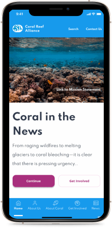
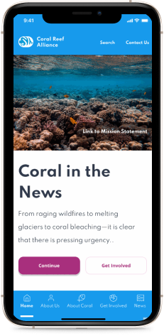

Coral Reef Alliance Redesign
 

I was part af four person team tasked with redesigning a responsive web design in both mobile and desktop views for the non-profit organization Coral Reef Alliance. Below you will find the story of how the redesign was created. This includes all the steps which were taken to preform the design along with explaining the difficulties that had to be overcame and why the design choices were implemented.